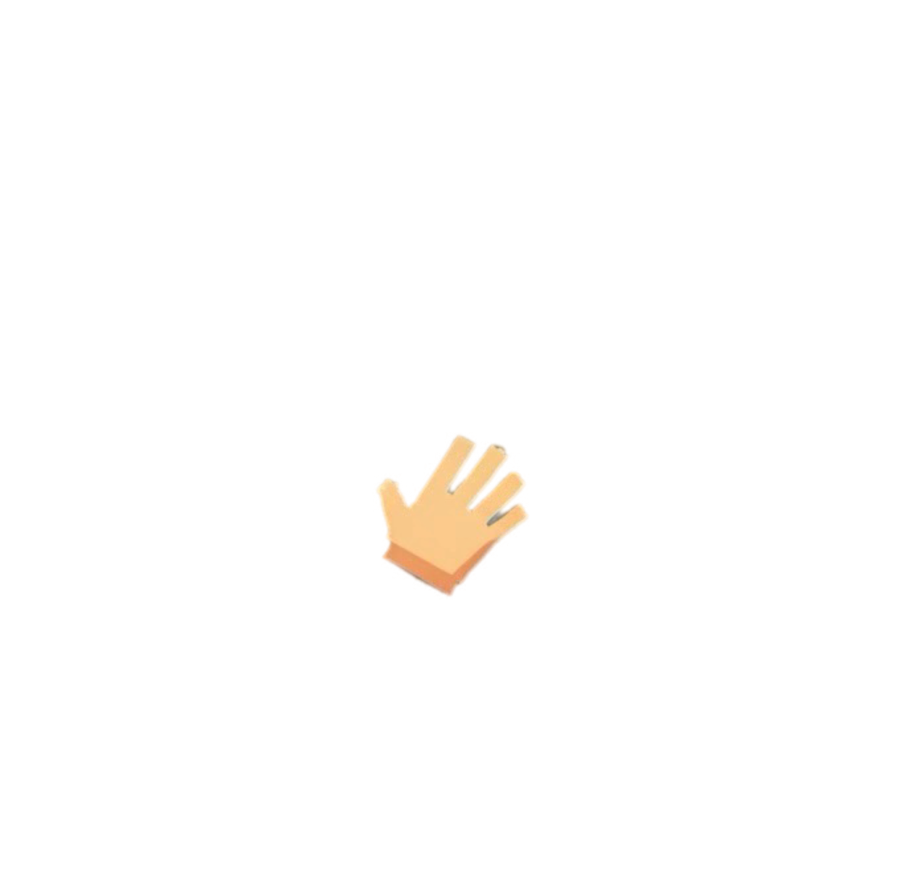

Размер такта
1/4, 4 шага
2/4, 8 шагов
3/4, 12 шагов
4/4, 16 шагов
5/4, 20 шагов
Длительность одной ячейки
1/16 шестнадцатая
1/8 восьмая
1/4 четверть
Сохранить упражнение в JSON

✖️
PLAY
STOP
Tempo:
120
BPM